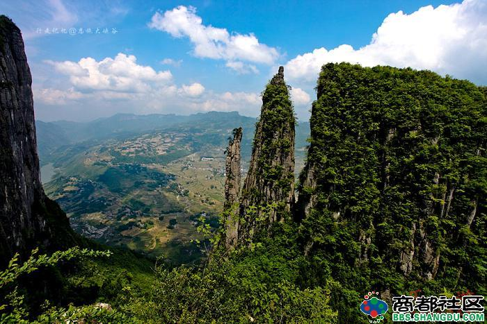
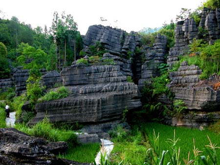
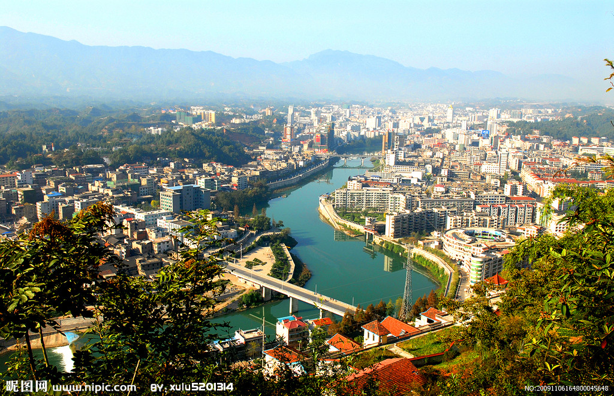

恩施土家族苗族自治州
恩施土家族苗族自治州位于中国湖北省西南部，简称恩施州，是中国湖北省下辖的民族自治州。西面和北面临近重庆市，东临宜昌市，南临 湖南湘西土家族苗族自治州，东北接神龙架林区。面积24111平方千米，人口394万，其中汉族约占45%，土家族约占46%,苗族约占6.5%。 世界25首著名民歌之《龙船调》就诞生在恩施州的利川市，因此恩施州又被称之为“龙船调的故乡”。
西临海
恩施州森林覆盖率近70%，享有“鄂西林海”， “华中药库”，“烟草王国”，“世界硒都”的称号。 全州水电资源理论蕴藏量达600万千瓦， 可开 发量达500万千瓦，风电资源蕴藏量达300万千 瓦是华中地区重要的清洁能源基地。鄂西铁矿是 中国四大铁矿之一，已探明储量13亿吨，预测 储量达40亿吨。天然气已探明储量1500亿立方 米,预测资源量达1.5万亿立方米。恩施还拥有 世界上最大的独立硒矿场.
恩施州属亚热带季风性 山地湿润气候。冬少严 寒，夏无酷暑，雨量充 沛，四季分明；海拔落 差大，小气候特征明显 ，垂直差异突出，“一山 有四季，十里不同天”。 境内年均气温16.2度， 年平均降水量1600毫米。 地处武汉和重庆两大 “火炉”之间，是最适宜 人类居住的地区之一
 
copyright©2015-2015 www.enshi.com 版权所有 盗版必究
意见反馈
网站收录
免费声明
关于我们
使用帮助